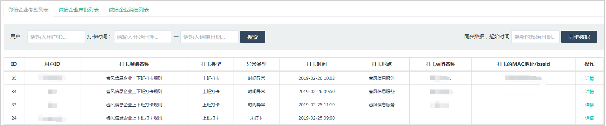
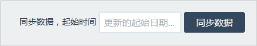
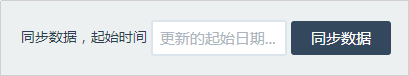
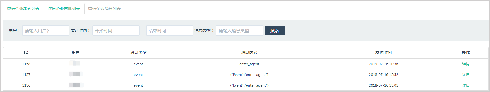

企业微信数据列表
-
用来记录平台上的考勤、审批以及消息内容，方便管理员管理查看。
企业微信考勤列表
-
点击【企业微信数据列表】进入详情的列表页面，点击顶部【企业微信考勤列表】，查看企业微信考勤的详细记录；

可以使用用户ID和时间进行查询；
右上角输入起始时间，点击同步数据，可以同步起始时间以前的数据。
企业微信审批列表
-
点击【企业微信数据列表】进入详情的列表页面，点击顶部【企业微信审批列表】，查看企业微信审批的详细记录；

可以使用关键字和审批状态进行查询；
a.审批状态分别为：审批中、已通过、已驳回、已取消、通过后撤销和已支付。 右上角输入起始时间，点击同步数据，可以同步起始时间以前的数据。

企业微信操作事件记录列表
- 点击【企业微信数据列表】进入详情的列表页面，点击顶部【企业微信操作事件记录列表】，查看企业微信操作记录的详细记录； 